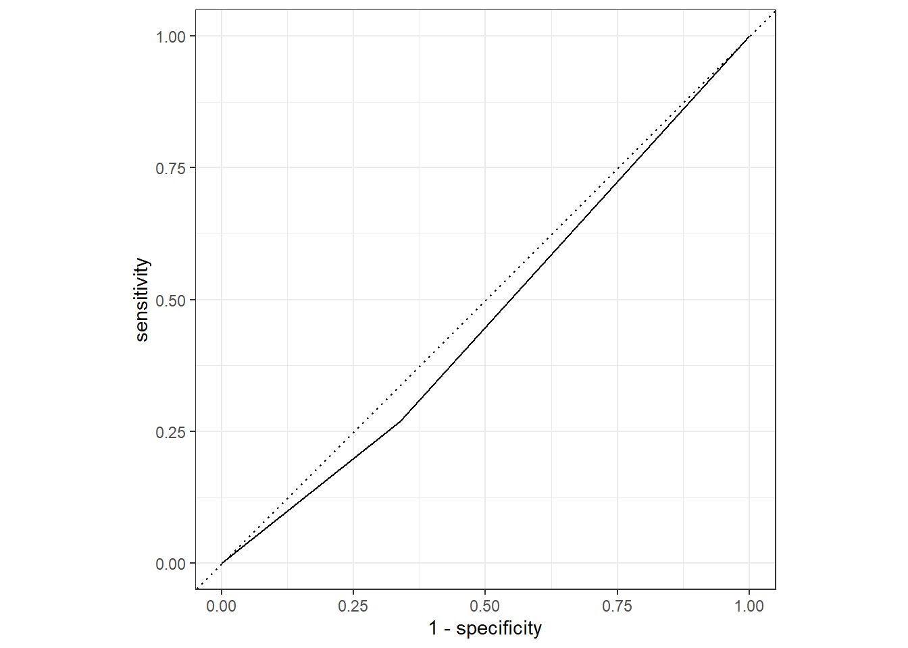
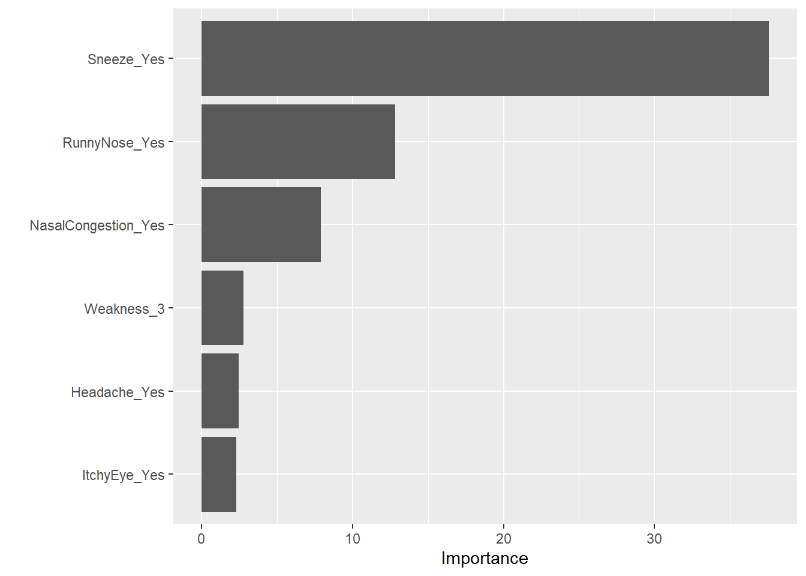

analysisscript
Gabriella Veytsel
November 4, 2021
Full analysis is here: https://github.com/Gabriella-Veytsel/Veytsel_MADA_Analysis3
Load needed packages. make sure they are installed.
library(ggplot2) #for plotting
library(broom) #for cleaning up output from lm()## Warning: package 'broom' was built under R version 4.1.1library(here) #for data loading/saving## Warning: package 'here' was built under R version 4.1.1## here() starts at C:/Users/Gabriella Veytsel/Desktop/MADA 2021/Gabriella_Veytsel-MADA-portfoliolibrary(tidyverse) #tidyr: tidy output## Warning: package 'tidyverse' was built under R version 4.1.1## -- Attaching packages --------------------------------------- tidyverse 1.3.1 --## v tibble 3.1.4 v dplyr 1.0.7
## v tidyr 1.1.4 v stringr 1.4.0
## v readr 2.0.1 v forcats 0.5.1
## v purrr 0.3.4## Warning: package 'tibble' was built under R version 4.1.1## Warning: package 'tidyr' was built under R version 4.1.1## Warning: package 'readr' was built under R version 4.1.1## Warning: package 'purrr' was built under R version 4.1.1## Warning: package 'stringr' was built under R version 4.1.1## Warning: package 'forcats' was built under R version 4.1.1## -- Conflicts ------------------------------------------ tidyverse_conflicts() --
## x dplyr::filter() masks stats::filter()
## x dplyr::lag() masks stats::lag()library(tidymodels) #linear and logistic reg## Warning: package 'tidymodels' was built under R version 4.1.1## Registered S3 method overwritten by 'tune':
## method from
## required_pkgs.model_spec parsnip## -- Attaching packages -------------------------------------- tidymodels 0.1.4 --## v dials 0.0.10 v rsample 0.1.0
## v infer 1.0.0 v tune 0.1.6
## v modeldata 0.1.1 v workflows 0.2.4
## v parsnip 0.1.7 v workflowsets 0.1.0
## v recipes 0.1.17 v yardstick 0.0.8## Warning: package 'dials' was built under R version 4.1.1## Warning: package 'scales' was built under R version 4.1.1## Warning: package 'infer' was built under R version 4.1.1## Warning: package 'modeldata' was built under R version 4.1.1## Warning: package 'parsnip' was built under R version 4.1.1## Warning: package 'recipes' was built under R version 4.1.1## Warning: package 'rsample' was built under R version 4.1.1## Warning: package 'tune' was built under R version 4.1.1## Warning: package 'workflows' was built under R version 4.1.1## Warning: package 'workflowsets' was built under R version 4.1.1## Warning: package 'yardstick' was built under R version 4.1.1## -- Conflicts ----------------------------------------- tidymodels_conflicts() --
## x scales::discard() masks purrr::discard()
## x dplyr::filter() masks stats::filter()
## x recipes::fixed() masks stringr::fixed()
## x dplyr::lag() masks stats::lag()
## x yardstick::spec() masks readr::spec()
## x recipes::step() masks stats::step()
## * Use suppressPackageStartupMessages() to eliminate package startup messageslibrary(broom.mixed)## Warning: package 'broom.mixed' was built under R version 4.1.1library(dotwhisker)## Warning: package 'dotwhisker' was built under R version 4.1.1## Registered S3 methods overwritten by 'parameters':
## method from
## as.double.parameters_kurtosis datawizard
## as.double.parameters_skewness datawizard
## as.double.parameters_smoothness datawizard
## as.numeric.parameters_kurtosis datawizard
## as.numeric.parameters_skewness datawizard
## as.numeric.parameters_smoothness datawizard
## print.parameters_distribution datawizard
## print.parameters_kurtosis datawizard
## print.parameters_skewness datawizard
## summary.parameters_kurtosis datawizard
## summary.parameters_skewness datawizardlibrary(skimr) #for variable summaries## Warning: package 'skimr' was built under R version 4.1.1library(rsample) #for splitting data
library(yardstick) #roc_curve() and roc_auc()
library(rpart.plot) #for visualizing a decision tree## Warning: package 'rpart.plot' was built under R version 4.1.1## Loading required package: rpart##
## Attaching package: 'rpart'## The following object is masked from 'package:dials':
##
## prunelibrary(vip) #for variable importance plots## Warning: package 'vip' was built under R version 4.1.1##
## Attaching package: 'vip'## The following object is masked from 'package:utils':
##
## vilibrary(ranger)## Warning: package 'ranger' was built under R version 4.1.1library(glmnet)## Warning: package 'glmnet' was built under R version 4.1.1## Loading required package: Matrix##
## Attaching package: 'Matrix'## The following objects are masked from 'package:tidyr':
##
## expand, pack, unpack## Loaded glmnet 4.1-2Load data
#path to data:: note the use of the here() package and not absolute paths
data_location <- here::here("files", "data","processed_data","processeddata.rds")
#load clean data.
mydata <- readRDS(data_location)Fit a linear model to the continuous outcome using only the main predictor of interest
#RunnyNose is our main predictor of interest
lm_mod <- linear_reg() %>%
set_engine("lm")
lm_fit <- lm_mod %>%
fit(BodyTemp ~ RunnyNose, data = mydata)
lm_fit_summary <- tidy(lm_fit) #tidy output
lm_fit_summary## # A tibble: 2 x 5
## term estimate std.error statistic p.value
## <chr> <dbl> <dbl> <dbl> <dbl>
## 1 (Intercept) 99.1 0.0819 1210. 0
## 2 RunnyNoseYes -0.293 0.0971 -3.01 0.00268Fit another linear model to the continuous outcome using all predictors of interest
mydata_subset <- mydata %>%
select(c(BodyTemp, SwollenLymphNodes, NasalCongestion, Sneeze, Fatigue,
SubjectiveFever, Pharyngitis)) ##All predictors of interest
lm_fit_all <- lm_mod %>%
fit(BodyTemp ~ ., data = mydata_subset)
lm_fit_all_summary <- tidy(lm_fit_all) #tidy output
lm_fit_all_summary## # A tibble: 7 x 5
## term estimate std.error statistic p.value
## <chr> <dbl> <dbl> <dbl> <dbl>
## 1 (Intercept) 98.3 0.193 509. 0
## 2 SwollenLymphNodesYes -0.151 0.0891 -1.70 0.0897
## 3 NasalCongestionYes -0.178 0.106 -1.69 0.0917
## 4 SneezeYes -0.368 0.0890 -4.13 0.0000406
## 5 FatigueYes 0.366 0.151 2.43 0.0156
## 6 SubjectiveFeverYes 0.530 0.0918 5.77 0.0000000115
## 7 PharyngitisYes 0.352 0.118 2.98 0.00299Compare the model results for the model with just the main predictor and all predictors
glance(lm_fit) #adjusted r-squared: 0.0110; AIC: 2329, BIC: 2343## # A tibble: 1 x 12
## r.squared adj.r.squared sigma statistic p.value df logLik AIC BIC
## <dbl> <dbl> <dbl> <dbl> <dbl> <dbl> <dbl> <dbl> <dbl>
## 1 0.0123 0.0110 1.19 9.08 0.00268 1 -1162. 2329. 2343.
## # ... with 3 more variables: deviance <dbl>, df.residual <int>, nobs <int>glance(lm_fit_all) #adjusted r-squared: 0.0862; AIC: 2277, BIC: 2313## # A tibble: 1 x 12
## r.squared adj.r.squared sigma statistic p.value df logLik AIC BIC
## <dbl> <dbl> <dbl> <dbl> <dbl> <dbl> <dbl> <dbl> <dbl>
## 1 0.0937 0.0862 1.14 12.5 2.16e-13 6 -1130. 2277. 2313.
## # ... with 3 more variables: deviance <dbl>, df.residual <int>, nobs <int>#Adding additional predictors only slightly improves the model fit:
#slightly higher r-squared, but still vary low
#slightly lower AIC and BICFit a logistic model to the categorical outcome using only the main predictor of interest.
logistic_mod <- logistic_reg() %>%
set_engine("glm")
log_fit <- logistic_mod %>%
fit(Nausea ~ RunnyNose, data = mydata)
log_fit_summary <- tidy(log_fit)
log_fit_summary## # A tibble: 2 x 5
## term estimate std.error statistic p.value
## <chr> <dbl> <dbl> <dbl> <dbl>
## 1 (Intercept) -0.658 0.145 -4.53 0.00000589
## 2 RunnyNoseYes 0.0502 0.172 0.292 0.770Fit another logistic model to the categorical outcome using all (important) predictors of interest
mydata_subset_nausea <- mydata %>%
select(c(ChillsSweats, Fatigue, SubjectiveFever, Headache,
Weakness, Myalgia, AbPain, Diarrhea, Vomit, BodyTemp, Nausea))
log_fit_all <- logistic_mod %>%
fit(Nausea ~ ., data = mydata_subset_nausea)
log_fit_all_summary <- tidy(log_fit_all)
log_fit_all_summary## # A tibble: 15 x 5
## term estimate std.error statistic p.value
## <chr> <dbl> <dbl> <dbl> <dbl>
## 1 (Intercept) 2.51 7.44 0.337 7.36e- 1
## 2 ChillsSweatsYes 0.329 0.275 1.19 2.32e- 1
## 3 FatigueYes 0.354 0.362 0.979 3.28e- 1
## 4 SubjectiveFeverYes 0.0638 0.210 0.304 7.61e- 1
## 5 HeadacheYes 0.416 0.276 1.51 1.32e- 1
## 6 Weakness.L 0.682 0.343 1.99 4.64e- 2
## 7 Weakness.Q 0.322 0.249 1.29 1.97e- 1
## 8 Weakness.C -0.113 0.177 -0.639 5.23e- 1
## 9 Myalgia.L 0.232 0.304 0.764 4.45e- 1
## 10 Myalgia.Q -0.0409 0.223 -0.184 8.54e- 1
## 11 Myalgia.C -0.107 0.171 -0.629 5.29e- 1
## 12 AbPainYes 0.986 0.267 3.70 2.19e- 4
## 13 DiarrheaYes 0.965 0.249 3.87 1.08e- 4
## 14 VomitYes 2.27 0.334 6.80 1.04e-11
## 15 BodyTemp -0.0475 0.0757 -0.628 5.30e- 1Compare the model results for the categorical model with just the main predictor and all predictors
glance(log_fit) #deviance: 945## # A tibble: 1 x 8
## null.deviance df.null logLik AIC BIC deviance df.residual nobs
## <dbl> <int> <dbl> <dbl> <dbl> <dbl> <int> <int>
## 1 945. 729 -472. 949. 958. 945. 728 730glance(log_fit_all) #deviance: 783## # A tibble: 1 x 8
## null.deviance df.null logLik AIC BIC deviance df.residual nobs
## <dbl> <int> <dbl> <dbl> <dbl> <dbl> <int> <int>
## 1 945. 729 -391. 813. 882. 783. 715 730#the smaller the deviance, the better the fit, so adding additional predictors improves the model fit
#also, the AIC and BIC are lowerExercise 9 * It is important that our outcome variable for training a logistic regression is a factor * Randomly split data into training set and testing set
- The training data will be used to fit the model
- The testing set will be used to measure model performance
# Fix the random numbers by setting a seed
# this enables the analysis to be reproducible when random #s are used
set.seed(222)
#Put 3/4 of the data into the training set
data_split <- initial_split(mydata, prop = 3/4)
#Create data frames for the two sets
train_data <- training(data_split)
test_data <- testing(data_split)Fit categorical outcome of interest to all predictors
#Categorical outcome of interest = Nausea
#Recipe () has two arguments: a formula and the data
processed_cat_rec <- recipe(Nausea ~ ., data = train_data)
#Build a model specification using the parsnip package
logistic_mod <- logistic_reg() %>%
set_engine("glm")
#Model workflow pairs a model and recipe together
processed_cat_workflow <-
workflow() %>%
add_model(logistic_mod) %>%
add_recipe(processed_cat_rec)
processed_cat_workflow## == Workflow ====================================================================
## Preprocessor: Recipe
## Model: logistic_reg()
##
## -- Preprocessor ----------------------------------------------------------------
## 0 Recipe Steps
##
## -- Model -----------------------------------------------------------------------
## Logistic Regression Model Specification (classification)
##
## Computational engine: glmprocessed_cat_fit <-
processed_cat_workflow %>%
fit(data = train_data)
#Extract the fitted model object and use tidy() to get a tidy tibble
#of model coefficients
processed_cat_fit %>%
extract_fit_parsnip() %>%
tidy()## # A tibble: 32 x 5
## term estimate std.error statistic p.value
## <chr> <dbl> <dbl> <dbl> <dbl>
## 1 (Intercept) 2.56 9.39 0.273 0.785
## 2 SwollenLymphNodesYes -0.240 0.231 -1.04 0.300
## 3 ChestCongestionYes 0.168 0.252 0.668 0.504
## 4 ChillsSweatsYes 0.148 0.331 0.448 0.654
## 5 NasalCongestionYes 0.600 0.309 1.94 0.0521
## 6 SneezeYes 0.0974 0.247 0.395 0.693
## 7 FatigueYes 0.180 0.438 0.411 0.681
## 8 SubjectiveFeverYes 0.191 0.261 0.733 0.463
## 9 HeadacheYes 0.482 0.351 1.37 0.169
## 10 Weakness.L 0.668 0.406 1.65 0.0999
## # ... with 22 more rowsModel Evaluaton: * Look at predictions, ROC and ROC-AUC for my data * ROC-AUC is how good the model is at distinguishing between patients with nausea and patients without nausea
#Use the trained workflow to predict with the test data
#Returns predicted class
predict(processed_cat_fit, test_data)## # A tibble: 183 x 1
## .pred_class
## <fct>
## 1 No
## 2 No
## 3 No
## 4 No
## 5 No
## 6 Yes
## 7 Yes
## 8 No
## 9 No
## 10 Yes
## # ... with 173 more rows#Can these warnings be ignored?
#Returns predicted class probabiliies
processed_cat_aug <- augment(processed_cat_fit, test_data)
processed_cat_aug## # A tibble: 183 x 29
## SwollenLymphNodes ChestCongestion ChillsSweats NasalCongestion Sneeze Fatigue
## <fct> <fct> <fct> <fct> <fct> <fct>
## 1 Yes No No No No Yes
## 2 Yes Yes Yes Yes Yes Yes
## 3 No No Yes No No Yes
## 4 Yes Yes Yes Yes Yes Yes
## 5 No Yes No No Yes Yes
## 6 No No Yes Yes No Yes
## 7 No No Yes Yes Yes Yes
## 8 Yes Yes Yes Yes Yes Yes
## 9 No No Yes Yes No Yes
## 10 No No Yes Yes Yes Yes
## # ... with 173 more rows, and 23 more variables: SubjectiveFever <fct>,
## # Headache <fct>, Weakness <ord>, CoughIntensity <ord>, Myalgia <ord>,
## # RunnyNose <fct>, AbPain <fct>, ChestPain <fct>, Diarrhea <fct>,
## # EyePn <fct>, Insomnia <fct>, ItchyEye <fct>, Nausea <fct>, EarPn <fct>,
## # Pharyngitis <fct>, Breathless <fct>, ToothPn <fct>, Vomit <fct>,
## # Wheeze <fct>, BodyTemp <dbl>, .pred_class <fct>, .pred_No <dbl>,
## # .pred_Yes <dbl>#Create the ROC curve
processed_cat_aug %>%
roc_curve(truth = Nausea, .pred_No) %>%
autoplot()
#Estimate the area under the curve
processed_cat_aug %>%
roc_auc(truth = Nausea, .pred_No) #0.724 - model is useful## # A tibble: 1 x 3
## .metric .estimator .estimate
## <chr> <chr> <dbl>
## 1 roc_auc binary 0.731#Was it correct to use .pred_No instead of .pred_Yes
#Out of curiousity, apply training data instead
#Use the trained workflow to predict with the training data
#Returns predicted class
predict(processed_cat_fit, train_data)## # A tibble: 547 x 1
## .pred_class
## <fct>
## 1 No
## 2 Yes
## 3 No
## 4 No
## 5 Yes
## 6 No
## 7 No
## 8 No
## 9 No
## 10 No
## # ... with 537 more rows#Returns predicted class probabiliies
processed_cat_aug_train <- augment(processed_cat_fit, train_data)
processed_cat_aug_train## # A tibble: 547 x 29
## SwollenLymphNodes ChestCongestion ChillsSweats NasalCongestion Sneeze Fatigue
## <fct> <fct> <fct> <fct> <fct> <fct>
## 1 No No Yes Yes No Yes
## 2 No Yes Yes Yes Yes Yes
## 3 Yes Yes Yes Yes Yes Yes
## 4 No Yes No Yes No Yes
## 5 Yes Yes Yes Yes Yes Yes
## 6 Yes No Yes Yes Yes Yes
## 7 No Yes Yes Yes Yes No
## 8 No Yes Yes Yes No Yes
## 9 Yes No Yes Yes No Yes
## 10 No No No Yes Yes Yes
## # ... with 537 more rows, and 23 more variables: SubjectiveFever <fct>,
## # Headache <fct>, Weakness <ord>, CoughIntensity <ord>, Myalgia <ord>,
## # RunnyNose <fct>, AbPain <fct>, ChestPain <fct>, Diarrhea <fct>,
## # EyePn <fct>, Insomnia <fct>, ItchyEye <fct>, Nausea <fct>, EarPn <fct>,
## # Pharyngitis <fct>, Breathless <fct>, ToothPn <fct>, Vomit <fct>,
## # Wheeze <fct>, BodyTemp <dbl>, .pred_class <fct>, .pred_No <dbl>,
## # .pred_Yes <dbl>#Create the ROC curve
processed_cat_aug_train %>%
roc_curve(truth = Nausea, .pred_No) %>%
autoplot()#Estimate the area under the curve
processed_cat_aug_train %>%
roc_auc(truth = Nausea, .pred_No) #0.787 - has better performance, as expected## # A tibble: 1 x 3
## .metric .estimator .estimate
## <chr> <chr> <dbl>
## 1 roc_auc binary 0.785Alternatiely, fit only the main predictor (RunnyNose)
#Set up a new recipe
processed_cat_main_rec <- recipe(Nausea ~ RunnyNose, data = train_data)
#Set up a new workflow
#Model workflow pairs a model and recipe together
processed_cat_main_workflow <-
workflow() %>%
add_model(logistic_mod) %>%
add_recipe(processed_cat_main_rec) #new recipe
processed_cat_main_workflow## == Workflow ====================================================================
## Preprocessor: Recipe
## Model: logistic_reg()
##
## -- Preprocessor ----------------------------------------------------------------
## 0 Recipe Steps
##
## -- Model -----------------------------------------------------------------------
## Logistic Regression Model Specification (classification)
##
## Computational engine: glmprocessed_cat_main_fit <-
processed_cat_main_workflow %>%
fit(data = train_data)
#Evaluate performace
#Use the trained workflow to predict with the test data
#Returns predicted class
predict(processed_cat_main_fit, test_data)## # A tibble: 183 x 1
## .pred_class
## <fct>
## 1 No
## 2 No
## 3 No
## 4 No
## 5 No
## 6 No
## 7 No
## 8 No
## 9 No
## 10 No
## # ... with 173 more rows#No warnings this time
#Returns predicted class probabiliies
processed_cat_main_aug <- augment(processed_cat_main_fit, test_data)
processed_cat_main_aug## # A tibble: 183 x 29
## SwollenLymphNodes ChestCongestion ChillsSweats NasalCongestion Sneeze Fatigue
## <fct> <fct> <fct> <fct> <fct> <fct>
## 1 Yes No No No No Yes
## 2 Yes Yes Yes Yes Yes Yes
## 3 No No Yes No No Yes
## 4 Yes Yes Yes Yes Yes Yes
## 5 No Yes No No Yes Yes
## 6 No No Yes Yes No Yes
## 7 No No Yes Yes Yes Yes
## 8 Yes Yes Yes Yes Yes Yes
## 9 No No Yes Yes No Yes
## 10 No No Yes Yes Yes Yes
## # ... with 173 more rows, and 23 more variables: SubjectiveFever <fct>,
## # Headache <fct>, Weakness <ord>, CoughIntensity <ord>, Myalgia <ord>,
## # RunnyNose <fct>, AbPain <fct>, ChestPain <fct>, Diarrhea <fct>,
## # EyePn <fct>, Insomnia <fct>, ItchyEye <fct>, Nausea <fct>, EarPn <fct>,
## # Pharyngitis <fct>, Breathless <fct>, ToothPn <fct>, Vomit <fct>,
## # Wheeze <fct>, BodyTemp <dbl>, .pred_class <fct>, .pred_No <dbl>,
## # .pred_Yes <dbl>#Create the ROC curve
processed_cat_main_aug %>%
roc_curve(truth = Nausea, .pred_No) %>%
autoplot() 
#Estimate the area under the curve
processed_cat_main_aug %>%
roc_auc(truth = Nausea, .pred_No) #0.466 - model is no good## # A tibble: 1 x 3
## .metric .estimator .estimate
## <chr> <chr> <dbl>
## 1 roc_auc binary 0.466#Was it correct to use .pred_No instead of .pred_YesOut of curiousity, apply training data instead
#Use the trained workflow to predict with the training data
#Returns predicted class
predict(processed_cat_main_fit, train_data)## # A tibble: 547 x 1
## .pred_class
## <fct>
## 1 No
## 2 No
## 3 No
## 4 No
## 5 No
## 6 No
## 7 No
## 8 No
## 9 No
## 10 No
## # ... with 537 more rows#Returns predicted class probabiliies
processed_cat_main_aug_train <- augment(processed_cat_main_fit, train_data)
processed_cat_main_aug_train## # A tibble: 547 x 29
## SwollenLymphNodes ChestCongestion ChillsSweats NasalCongestion Sneeze Fatigue
## <fct> <fct> <fct> <fct> <fct> <fct>
## 1 No No Yes Yes No Yes
## 2 No Yes Yes Yes Yes Yes
## 3 Yes Yes Yes Yes Yes Yes
## 4 No Yes No Yes No Yes
## 5 Yes Yes Yes Yes Yes Yes
## 6 Yes No Yes Yes Yes Yes
## 7 No Yes Yes Yes Yes No
## 8 No Yes Yes Yes No Yes
## 9 Yes No Yes Yes No Yes
## 10 No No No Yes Yes Yes
## # ... with 537 more rows, and 23 more variables: SubjectiveFever <fct>,
## # Headache <fct>, Weakness <ord>, CoughIntensity <ord>, Myalgia <ord>,
## # RunnyNose <fct>, AbPain <fct>, ChestPain <fct>, Diarrhea <fct>,
## # EyePn <fct>, Insomnia <fct>, ItchyEye <fct>, Nausea <fct>, EarPn <fct>,
## # Pharyngitis <fct>, Breathless <fct>, ToothPn <fct>, Vomit <fct>,
## # Wheeze <fct>, BodyTemp <dbl>, .pred_class <fct>, .pred_No <dbl>,
## # .pred_Yes <dbl>#Create the ROC curve
processed_cat_main_aug_train %>%
roc_curve(truth = Nausea, .pred_No) %>%
autoplot()#Estimate the area under the curve
processed_cat_main_aug_train %>%
roc_auc(truth = Nausea, .pred_No) #0.519 - has better performance, as expected## # A tibble: 1 x 3
## .metric .estimator .estimate
## <chr> <chr> <dbl>
## 1 roc_auc binary 0.519Amanda Glatter
#Continuous outcome of interest = BodyTemp
#Recipe () has two arguments: a formula and the data
bodytemp_recipe <- recipe(BodyTemp ~ ., data = train_data)
#Build a model specification using the parsnip package
linear_model <- linear_reg() %>%
set_engine("lm")
#Model workflow pairs a model and recipe together
cont_workflow <-
workflow() %>%
add_model(linear_model) %>%
add_recipe(bodytemp_recipe)
cont_workflow## == Workflow ====================================================================
## Preprocessor: Recipe
## Model: linear_reg()
##
## -- Preprocessor ----------------------------------------------------------------
## 0 Recipe Steps
##
## -- Model -----------------------------------------------------------------------
## Linear Regression Model Specification (regression)
##
## Computational engine: lmcont_fit <-
cont_workflow %>%
fit(data = train_data)
#Extract the fitted model object and use tidy() to get a tidy tibble
#of model coefficients
cont_fit %>%
extract_fit_parsnip() %>%
tidy()## # A tibble: 32 x 5
## term estimate std.error statistic p.value
## <chr> <dbl> <dbl> <dbl> <dbl>
## 1 (Intercept) 98.0 0.280 350. 0
## 2 SwollenLymphNodesYes -0.190 0.108 -1.76 0.0789
## 3 ChestCongestionYes 0.146 0.115 1.27 0.203
## 4 ChillsSweatsYes 0.184 0.148 1.24 0.214
## 5 NasalCongestionYes -0.182 0.136 -1.34 0.180
## 6 SneezeYes -0.474 0.113 -4.18 0.0000338
## 7 FatigueYes 0.362 0.187 1.94 0.0529
## 8 SubjectiveFeverYes 0.564 0.118 4.79 0.00000223
## 9 HeadacheYes 0.0675 0.150 0.448 0.654
## 10 Weakness.L 0.224 0.182 1.23 0.218
## # ... with 22 more rows#We'll now start to evaluate the model using RMSE.
#We use RMSE on BodyTemp against all predictors and use the train data.
#Make predictions.
predict(cont_fit, train_data)## # A tibble: 547 x 1
## .pred
## <dbl>
## 1 99.2
## 2 98.9
## 3 98.7
## 4 98.7
## 5 98.9
## 6 98.4
## 7 98.7
## 8 99.6
## 9 99.3
## 10 98.7
## # ... with 537 more rows#Returns predicted class probabiliies
cont_aug_train <- augment(cont_fit, train_data)
cont_aug_train## # A tibble: 547 x 27
## SwollenLymphNodes ChestCongestion ChillsSweats NasalCongestion Sneeze Fatigue
## <fct> <fct> <fct> <fct> <fct> <fct>
## 1 No No Yes Yes No Yes
## 2 No Yes Yes Yes Yes Yes
## 3 Yes Yes Yes Yes Yes Yes
## 4 No Yes No Yes No Yes
## 5 Yes Yes Yes Yes Yes Yes
## 6 Yes No Yes Yes Yes Yes
## 7 No Yes Yes Yes Yes No
## 8 No Yes Yes Yes No Yes
## 9 Yes No Yes Yes No Yes
## 10 No No No Yes Yes Yes
## # ... with 537 more rows, and 21 more variables: SubjectiveFever <fct>,
## # Headache <fct>, Weakness <ord>, CoughIntensity <ord>, Myalgia <ord>,
## # RunnyNose <fct>, AbPain <fct>, ChestPain <fct>, Diarrhea <fct>,
## # EyePn <fct>, Insomnia <fct>, ItchyEye <fct>, Nausea <fct>, EarPn <fct>,
## # Pharyngitis <fct>, Breathless <fct>, ToothPn <fct>, Vomit <fct>,
## # Wheeze <fct>, BodyTemp <dbl>, .pred <dbl>#RMSE
train_rmse <- cont_aug_train %>%
rmse(truth = BodyTemp, .pred)
train_rmse #The value is 1.11.## # A tibble: 1 x 3
## .metric .estimator .estimate
## <chr> <chr> <dbl>
## 1 rmse standard 1.12Now we repeat this on the test data
#We use RMSE on BodyTemp against all predictors and use the test data.
#Make predictions.
predict(cont_fit, test_data)## # A tibble: 183 x 1
## .pred
## <dbl>
## 1 99.4
## 2 99.0
## 3 99.8
## 4 98.7
## 5 99.0
## 6 99.6
## 7 99.2
## 8 98.8
## 9 99.5
## 10 98.8
## # ... with 173 more rows#Returns predicted class probabiliies
cont_aug_test <- augment(cont_fit, test_data)
cont_aug_test## # A tibble: 183 x 27
## SwollenLymphNodes ChestCongestion ChillsSweats NasalCongestion Sneeze Fatigue
## <fct> <fct> <fct> <fct> <fct> <fct>
## 1 Yes No No No No Yes
## 2 Yes Yes Yes Yes Yes Yes
## 3 No No Yes No No Yes
## 4 Yes Yes Yes Yes Yes Yes
## 5 No Yes No No Yes Yes
## 6 No No Yes Yes No Yes
## 7 No No Yes Yes Yes Yes
## 8 Yes Yes Yes Yes Yes Yes
## 9 No No Yes Yes No Yes
## 10 No No Yes Yes Yes Yes
## # ... with 173 more rows, and 21 more variables: SubjectiveFever <fct>,
## # Headache <fct>, Weakness <ord>, CoughIntensity <ord>, Myalgia <ord>,
## # RunnyNose <fct>, AbPain <fct>, ChestPain <fct>, Diarrhea <fct>,
## # EyePn <fct>, Insomnia <fct>, ItchyEye <fct>, Nausea <fct>, EarPn <fct>,
## # Pharyngitis <fct>, Breathless <fct>, ToothPn <fct>, Vomit <fct>,
## # Wheeze <fct>, BodyTemp <dbl>, .pred <dbl>#RMSE
test_rmse <- cont_aug_test %>%
rmse(truth = BodyTemp, .pred)
test_rmse #The value is 1.15.## # A tibble: 1 x 3
## .metric .estimator .estimate
## <chr> <chr> <dbl>
## 1 rmse standard 1.15#Now we have to make a recipe for Body Temp and Runny nose.
bodytemp_runnynose_recipe <- recipe(BodyTemp ~ RunnyNose, data = train_data)
#Model workflow pairs a model and recipe together (runny nose and body temp)
cont_workflow2 <-
workflow() %>%
add_model(linear_model) %>%
add_recipe(bodytemp_runnynose_recipe)
cont_fit2 <-
cont_workflow2 %>%
fit(data = train_data)
#Extract the fitted model object and use tidy() to get a tidy tibble
#of model coefficients
cont_fit2 %>%
extract_fit_parsnip() %>%
tidy()## # A tibble: 2 x 5
## term estimate std.error statistic p.value
## <chr> <dbl> <dbl> <dbl> <dbl>
## 1 (Intercept) 99.1 0.0964 1028. 0
## 2 RunnyNoseYes -0.261 0.114 -2.29 0.0225#make predictions
predict(cont_fit2, train_data)## # A tibble: 547 x 1
## .pred
## <dbl>
## 1 98.9
## 2 98.9
## 3 98.9
## 4 98.9
## 5 98.9
## 6 98.9
## 7 98.9
## 8 98.9
## 9 99.1
## 10 98.9
## # ... with 537 more rows#Returns predicted class probabiliies
cont_aug_train2 <- augment(cont_fit2, train_data)
cont_aug_train2## # A tibble: 547 x 27
## SwollenLymphNodes ChestCongestion ChillsSweats NasalCongestion Sneeze Fatigue
## <fct> <fct> <fct> <fct> <fct> <fct>
## 1 No No Yes Yes No Yes
## 2 No Yes Yes Yes Yes Yes
## 3 Yes Yes Yes Yes Yes Yes
## 4 No Yes No Yes No Yes
## 5 Yes Yes Yes Yes Yes Yes
## 6 Yes No Yes Yes Yes Yes
## 7 No Yes Yes Yes Yes No
## 8 No Yes Yes Yes No Yes
## 9 Yes No Yes Yes No Yes
## 10 No No No Yes Yes Yes
## # ... with 537 more rows, and 21 more variables: SubjectiveFever <fct>,
## # Headache <fct>, Weakness <ord>, CoughIntensity <ord>, Myalgia <ord>,
## # RunnyNose <fct>, AbPain <fct>, ChestPain <fct>, Diarrhea <fct>,
## # EyePn <fct>, Insomnia <fct>, ItchyEye <fct>, Nausea <fct>, EarPn <fct>,
## # Pharyngitis <fct>, Breathless <fct>, ToothPn <fct>, Vomit <fct>,
## # Wheeze <fct>, BodyTemp <dbl>, .pred <dbl>#We use RMSE on BodyTemp with predictor RunnyNose using test data.
#RMSE
train_rmse2 <- cont_aug_train2 %>%
rmse(truth = BodyTemp, .pred)
train_rmse2 #The value is 1.21.## # A tibble: 1 x 3
## .metric .estimator .estimate
## <chr> <chr> <dbl>
## 1 rmse standard 1.21#Now we repeat this on the test data.
#We use RMSE on BodyTemp against Runnt nose and use the test data.
#Make predictions.
predict(cont_fit2, test_data)## # A tibble: 183 x 1
## .pred
## <dbl>
## 1 99.1
## 2 98.9
## 3 98.9
## 4 98.9
## 5 99.1
## 6 99.1
## 7 98.9
## 8 99.1
## 9 99.1
## 10 99.1
## # ... with 173 more rows#Returns predicted class probabiliies
cont_aug_test2 <- augment(cont_fit2, test_data)
cont_aug_test2## # A tibble: 183 x 27
## SwollenLymphNodes ChestCongestion ChillsSweats NasalCongestion Sneeze Fatigue
## <fct> <fct> <fct> <fct> <fct> <fct>
## 1 Yes No No No No Yes
## 2 Yes Yes Yes Yes Yes Yes
## 3 No No Yes No No Yes
## 4 Yes Yes Yes Yes Yes Yes
## 5 No Yes No No Yes Yes
## 6 No No Yes Yes No Yes
## 7 No No Yes Yes Yes Yes
## 8 Yes Yes Yes Yes Yes Yes
## 9 No No Yes Yes No Yes
## 10 No No Yes Yes Yes Yes
## # ... with 173 more rows, and 21 more variables: SubjectiveFever <fct>,
## # Headache <fct>, Weakness <ord>, CoughIntensity <ord>, Myalgia <ord>,
## # RunnyNose <fct>, AbPain <fct>, ChestPain <fct>, Diarrhea <fct>,
## # EyePn <fct>, Insomnia <fct>, ItchyEye <fct>, Nausea <fct>, EarPn <fct>,
## # Pharyngitis <fct>, Breathless <fct>, ToothPn <fct>, Vomit <fct>,
## # Wheeze <fct>, BodyTemp <dbl>, .pred <dbl>#RMSE
test_rmse2 <- cont_aug_test2 %>%
rmse(truth = BodyTemp, .pred)
test_rmse2 #The value is 1.13.## # A tibble: 1 x 3
## .metric .estimator .estimate
## <chr> <chr> <dbl>
## 1 rmse standard 1.13Exercise 10 * Main outcome: continuous, numerical value of body temperature
Splitting and resampling data
#Fix the random numbers by setting a seed
#this enables the analysis to be reproducible when random #s are used
set.seed(123)
#The rates of bodytemp are somewhat unbalanced
mydata %>%
count(BodyTemp) %>%
mutate(prop = n/sum(n))## BodyTemp n prop
## 1 97.2 2 0.002739726
## 2 97.3 1 0.001369863
## 3 97.4 7 0.009589041
## 4 97.5 9 0.012328767
## 5 97.6 7 0.009589041
## 6 97.7 14 0.019178082
## 7 97.8 23 0.031506849
## 8 97.9 29 0.039726027
## 9 98.0 30 0.041095890
## 10 98.1 46 0.063013699
## 11 98.2 50 0.068493151
## 12 98.3 62 0.084931507
## 13 98.4 40 0.054794521
## 14 98.5 53 0.072602740
## 15 98.6 27 0.036986301
## 16 98.7 35 0.047945205
## 17 98.8 24 0.032876712
## 18 98.9 23 0.031506849
## 19 99.0 25 0.034246575
## 20 99.1 15 0.020547945
## 21 99.2 20 0.027397260
## 22 99.3 18 0.024657534
## 23 99.4 11 0.015068493
## 24 99.5 14 0.019178082
## 25 99.6 6 0.008219178
## 26 99.7 11 0.015068493
## 27 99.8 6 0.008219178
## 28 99.9 10 0.013698630
## 29 100.0 7 0.009589041
## 30 100.1 7 0.009589041
## 31 100.2 8 0.010958904
## 32 100.3 5 0.006849315
## 33 100.4 7 0.009589041
## 34 100.5 5 0.006849315
## 35 100.6 4 0.005479452
## 36 100.8 2 0.002739726
## 37 100.9 9 0.012328767
## 38 101.0 2 0.002739726
## 39 101.1 3 0.004109589
## 40 101.2 4 0.005479452
## 41 101.3 1 0.001369863
## 42 101.5 2 0.002739726
## 43 101.6 2 0.002739726
## 44 101.7 3 0.004109589
## 45 101.8 4 0.005479452
## 46 101.9 6 0.008219178
## 47 102.0 2 0.002739726
## 48 102.1 2 0.002739726
## 49 102.2 3 0.004109589
## 50 102.4 2 0.002739726
## 51 102.5 2 0.002739726
## 52 102.6 3 0.004109589
## 53 102.7 2 0.002739726
## 54 102.8 5 0.006849315
## 55 102.9 1 0.001369863
## 56 103.0 7 0.009589041
## 57 103.1 2 0.002739726#Split the dataset into 70% training, 30% testing
#Despite imbalance we noticed in bodytemp,
#stratified split ensures that training and test data sets will keep roughly the same proportions of bodytemp
data_split <- initial_split(mydata, prop = 0.7, strata = BodyTemp)
#Create data frames for the two sets
train_data <- training(data_split)
test_data <- testing(data_split)Cross validation
#We want to do 5-fold cross-validation, 5 times repeated
#For the CV folds, we also want to stratify on BodyTemp
#V-fold cross-validation (vfold_cv) randomly splits the data into V groups of roughly equal size (called "folds")
resample_object <- vfold_cv(train_data, v = 5, repeats = 5, strata = BodyTemp)Create a recipe for the data and fitting
#Code the categorical variables as dummy variables using step_dummy
#and pick all nominal predictors
#Continuous outcome of interest = BodyTemp
#Step_dummy creates a set of binary dummy variables from a factor variable
processed_cont_rec <- recipe(BodyTemp ~ ., data = train_data) %>%
step_dummy(all_nominal_predictors())
class(processed_cont_rec$template$Weakness)## [1] "ordered" "factor"tidy(processed_cont_rec)## # A tibble: 1 x 6
## number operation type trained skip id
## <int> <chr> <chr> <lgl> <lgl> <chr>
## 1 1 step dummy FALSE FALSE dummy_I1CwjNull model performance
#For a continuous outcome and RMSE as our metric,
#a null model is one that always predicts the mean of the outcome.
lm_mod <- linear_reg() %>%
set_engine('lm') %>%
set_mode('regression')
null_rec <- recipe(BodyTemp ~ 1, data = train_data)
null_workflow <- workflow() %>%
add_model(lm_mod) %>%
add_recipe(null_rec)
null_workflow## == Workflow ====================================================================
## Preprocessor: Recipe
## Model: linear_reg()
##
## -- Preprocessor ----------------------------------------------------------------
## 0 Recipe Steps
##
## -- Model -----------------------------------------------------------------------
## Linear Regression Model Specification (regression)
##
## Computational engine: lmnull_fit <- null_workflow %>%
fit(data = train_data)
#On Test data
predict(null_fit, test_data) ## # A tibble: 222 x 1
## .pred
## <dbl>
## 1 98.9
## 2 98.9
## 3 98.9
## 4 98.9
## 5 98.9
## 6 98.9
## 7 98.9
## 8 98.9
## 9 98.9
## 10 98.9
## # ... with 212 more rowsnull_fit_test <- augment(null_fit, test_data)
null_fit_test## # A tibble: 222 x 27
## SwollenLymphNodes ChestCongestion ChillsSweats NasalCongestion Sneeze Fatigue
## <fct> <fct> <fct> <fct> <fct> <fct>
## 1 Yes Yes No Yes No Yes
## 2 Yes Yes Yes Yes Yes Yes
## 3 Yes Yes Yes Yes No Yes
## 4 Yes Yes Yes Yes No Yes
## 5 Yes Yes Yes Yes Yes Yes
## 6 No No Yes No No Yes
## 7 No No Yes Yes No Yes
## 8 No Yes Yes Yes No Yes
## 9 Yes Yes Yes Yes No Yes
## 10 No No Yes Yes No Yes
## # ... with 212 more rows, and 21 more variables: SubjectiveFever <fct>,
## # Headache <fct>, Weakness <ord>, CoughIntensity <ord>, Myalgia <ord>,
## # RunnyNose <fct>, AbPain <fct>, ChestPain <fct>, Diarrhea <fct>,
## # EyePn <fct>, Insomnia <fct>, ItchyEye <fct>, Nausea <fct>, EarPn <fct>,
## # Pharyngitis <fct>, Breathless <fct>, ToothPn <fct>, Vomit <fct>,
## # Wheeze <fct>, BodyTemp <dbl>, .pred <dbl>null_fit_test %>%
rmse(truth = BodyTemp, .pred) #1.16## # A tibble: 1 x 3
## .metric .estimator .estimate
## <chr> <chr> <dbl>
## 1 rmse standard 1.16#On Train data
predict(null_fit, train_data)## # A tibble: 508 x 1
## .pred
## <dbl>
## 1 98.9
## 2 98.9
## 3 98.9
## 4 98.9
## 5 98.9
## 6 98.9
## 7 98.9
## 8 98.9
## 9 98.9
## 10 98.9
## # ... with 498 more rowsnull_fit_train <- augment(null_fit, train_data)
null_fit_train## # A tibble: 508 x 27
## SwollenLymphNodes ChestCongestion ChillsSweats NasalCongestion Sneeze Fatigue
## <fct> <fct> <fct> <fct> <fct> <fct>
## 1 No Yes No Yes No Yes
## 2 Yes Yes Yes Yes No Yes
## 3 Yes Yes Yes Yes Yes Yes
## 4 Yes Yes Yes Yes Yes Yes
## 5 No Yes No No Yes Yes
## 6 No No Yes Yes Yes Yes
## 7 No No No Yes Yes Yes
## 8 No Yes Yes No No Yes
## 9 No No Yes Yes No No
## 10 Yes Yes Yes Yes No Yes
## # ... with 498 more rows, and 21 more variables: SubjectiveFever <fct>,
## # Headache <fct>, Weakness <ord>, CoughIntensity <ord>, Myalgia <ord>,
## # RunnyNose <fct>, AbPain <fct>, ChestPain <fct>, Diarrhea <fct>,
## # EyePn <fct>, Insomnia <fct>, ItchyEye <fct>, Nausea <fct>, EarPn <fct>,
## # Pharyngitis <fct>, Breathless <fct>, ToothPn <fct>, Vomit <fct>,
## # Wheeze <fct>, BodyTemp <dbl>, .pred <dbl>null_fit_train %>%
rmse(truth = BodyTemp, .pred) #1.21...wouldn't the rmse be better on train data though?## # A tibble: 1 x 3
## .metric .estimator .estimate
## <chr> <chr> <dbl>
## 1 rmse standard 1.21- Fit a tree, a LASSO model, and a random forest
- For the tree, see the Tune model parameters section of the Get Started tutorial.
- For LASSO and the random forest, check out the Case Study section of the Get Started tutorial.
Packages to fit these 3 models: rpart, glmnet and ranger
- The steps (block of code) you should have here are
- model specification,
- workflow definition,
- tune grid specification, and
- tuning using cross-validation and the tune_grid function
Tree Model
#Decision tree models are prone to overfitting
#Tuning the hyperparameters cost_complexity and maximum tree_depth can improve model performance
#Tuning cost_complexity prunes the tree by ading a cost/penalty to error rates of more complex trees
#Low cost decreases the number of tree nodes pruned -> overfitting
#High cost increases the number of tree nodes pruned -> underfitting
#Tuning tree_depth stops our tree from growing after it reaches a certain depth
#Model specification:
tune_spec <- decision_tree(
cost_complexity = tune(),
tree_depth = tune()) %>%
set_engine("rpart") %>%
set_mode("regression")
tune_spec## Decision Tree Model Specification (regression)
##
## Main Arguments:
## cost_complexity = tune()
## tree_depth = tune()
##
## Computational engine: rpart#Tune grid specification:
#grid_regular() from the dials package chooses sensible values to try for each hyperparameter
#grid filled with 25 candidate decision tree models
tree_grid <-
grid_regular(cost_complexity(),
tree_depth(),
levels = 5)
tree_grid## # A tibble: 25 x 2
## cost_complexity tree_depth
## <dbl> <int>
## 1 0.0000000001 1
## 2 0.0000000178 1
## 3 0.00000316 1
## 4 0.000562 1
## 5 0.1 1
## 6 0.0000000001 4
## 7 0.0000000178 4
## 8 0.00000316 4
## 9 0.000562 4
## 10 0.1 4
## # ... with 15 more rows#Workflow definition
#Use tune_grid() to fit models at all the different values we chose for each hyperparameter
tree_wf <- workflow() %>%
add_model(tune_spec) %>%
add_recipe(processed_cont_rec)
tree_res <- tree_wf %>%
tune_grid(
resamples = resample_object,
grid = tree_grid
)## Warning: package 'rlang' was built under R version 4.1.1## Warning: package 'vctrs' was built under R version 4.1.1## ! Fold1, Repeat1: internal: A correlation computation is required, but `estimate` is const...## ! Fold2, Repeat1: internal: A correlation computation is required, but `estimate` is const...## ! Fold3, Repeat1: internal: A correlation computation is required, but `estimate` is const...## ! Fold4, Repeat1: internal: A correlation computation is required, but `estimate` is const...## ! Fold5, Repeat1: internal: A correlation computation is required, but `estimate` is const...## ! Fold1, Repeat2: internal: A correlation computation is required, but `estimate` is const...## ! Fold2, Repeat2: internal: A correlation computation is required, but `estimate` is const...## ! Fold3, Repeat2: internal: A correlation computation is required, but `estimate` is const...## ! Fold4, Repeat2: internal: A correlation computation is required, but `estimate` is const...## ! Fold5, Repeat2: internal: A correlation computation is required, but `estimate` is const...## ! Fold1, Repeat3: internal: A correlation computation is required, but `estimate` is const...## ! Fold2, Repeat3: internal: A correlation computation is required, but `estimate` is const...## ! Fold3, Repeat3: internal: A correlation computation is required, but `estimate` is const...## ! Fold4, Repeat3: internal: A correlation computation is required, but `estimate` is const...## ! Fold5, Repeat3: internal: A correlation computation is required, but `estimate` is const...## ! Fold1, Repeat4: internal: A correlation computation is required, but `estimate` is const...## ! Fold2, Repeat4: internal: A correlation computation is required, but `estimate` is const...## ! Fold3, Repeat4: internal: A correlation computation is required, but `estimate` is const...## ! Fold4, Repeat4: internal: A correlation computation is required, but `estimate` is const...## ! Fold5, Repeat4: internal: A correlation computation is required, but `estimate` is const...## ! Fold1, Repeat5: internal: A correlation computation is required, but `estimate` is const...## ! Fold2, Repeat5: internal: A correlation computation is required, but `estimate` is const...## ! Fold3, Repeat5: internal: A correlation computation is required, but `estimate` is const...## ! Fold4, Repeat5: internal: A correlation computation is required, but `estimate` is const...## ! Fold5, Repeat5: internal: A correlation computation is required, but `estimate` is const...#Can these warnings be ignored?
#"A correlation computation is required, but "estimate" is constant nd has 0 standard deviation, resulting in a divide by 0"
tree_res %>%
collect_metrics## # A tibble: 50 x 8
## cost_complexity tree_depth .metric .estimator mean n std_err .config
## <dbl> <int> <chr> <chr> <dbl> <int> <dbl> <chr>
## 1 0.0000000001 1 rmse standard 1.19 25 0.0181 Prepro~
## 2 0.0000000001 1 rsq standard 0.0361 25 0.00422 Prepro~
## 3 0.0000000178 1 rmse standard 1.19 25 0.0181 Prepro~
## 4 0.0000000178 1 rsq standard 0.0361 25 0.00422 Prepro~
## 5 0.00000316 1 rmse standard 1.19 25 0.0181 Prepro~
## 6 0.00000316 1 rsq standard 0.0361 25 0.00422 Prepro~
## 7 0.000562 1 rmse standard 1.19 25 0.0181 Prepro~
## 8 0.000562 1 rsq standard 0.0361 25 0.00422 Prepro~
## 9 0.1 1 rmse standard 1.21 25 0.0177 Prepro~
## 10 0.1 1 rsq standard NaN 0 NA Prepro~
## # ... with 40 more rowstree_res %>%
autoplot()
tree_res %>%
show_best("rmse") ## # A tibble: 5 x 8
## cost_complexity tree_depth .metric .estimator mean n std_err .config
## <dbl> <int> <chr> <chr> <dbl> <int> <dbl> <chr>
## 1 0.0000000001 1 rmse standard 1.19 25 0.0181 Preprocesso~
## 2 0.0000000178 1 rmse standard 1.19 25 0.0181 Preprocesso~
## 3 0.00000316 1 rmse standard 1.19 25 0.0181 Preprocesso~
## 4 0.000562 1 rmse standard 1.19 25 0.0181 Preprocesso~
## 5 0.0000000001 4 rmse standard 1.20 25 0.0182 Preprocesso~#Pull out the single set of hyperparameter values for our best decision tree model
best_tree <- select_best(tree_res)## Warning: No value of `metric` was given; metric 'rmse' will be used.#These are the values for tree_depth and cost_complexity that maximize accuracy
best_tree## # A tibble: 1 x 3
## cost_complexity tree_depth .config
## <dbl> <int> <chr>
## 1 0.0000000001 1 Preprocessor1_Model01#Update our workflow with the values from select_best()
best_tree_wf <- tree_wf %>%
finalize_workflow(best_tree)
best_tree_wf## == Workflow ====================================================================
## Preprocessor: Recipe
## Model: decision_tree()
##
## -- Preprocessor ----------------------------------------------------------------
## 1 Recipe Step
##
## * step_dummy()
##
## -- Model -----------------------------------------------------------------------
## Decision Tree Model Specification (regression)
##
## Main Arguments:
## cost_complexity = 1e-10
## tree_depth = 1
##
## Computational engine: rpart#Fit final model to training data and evaluates finalized model on the testing data
best_tree_fit <- best_tree_wf %>%
last_fit(data_split)
best_tree_fit %>%
collect_metrics() #RMSE = 1.19## # A tibble: 2 x 4
## .metric .estimator .estimate .config
## <chr> <chr> <dbl> <chr>
## 1 rmse standard 1.19 Preprocessor1_Model1
## 2 rsq standard 0.000889 Preprocessor1_Model1#Plot residuals
#!!!!!!!!!!!!!!
#Plot the tree
best_tree_fit %>%
extract_fit_engine() %>%
rpart.plot(roundint = FALSE)
#What variables are important in this model?
best_tree_fit %>%
extract_fit_parsnip() %>%
vip() #Sneeze_yes, runnynose_yes, nasal_congestion_yes,
#weakness_3, headache_yes, itchyeye_yesLasso
#LASSO is a penalization method for less relevant preictors
#Model specification:
tune_spec_lasso <- linear_reg(penalty = tune(),
mixture = 1) %>% #glmnet model will potentially remove irrelevant predictors and choose a simpler model
set_engine("glmnet") #fits glm models via penalized maximum likelihood
tune_spec_lasso## Linear Regression Model Specification (regression)
##
## Main Arguments:
## penalty = tune()
## mixture = 1
##
## Computational engine: glmnet#Workflow
lasso_workflow <-
workflow() %>%
add_model(tune_spec_lasso) %>%
add_recipe(processed_cont_rec)
#Tuning grid
lasso_grid <- tibble(penalty = 10^seq(-4,-1,length.out = 30)) #30 candidate values
lasso_grid %>% top_n(-5) #lowest penalty values## Selecting by penalty## # A tibble: 5 x 1
## penalty
## <dbl>
## 1 0.0001
## 2 0.000127
## 3 0.000161
## 4 0.000204
## 5 0.000259lasso_grid %>% top_n(5) #highest penalty values## Selecting by penalty## # A tibble: 5 x 1
## penalty
## <dbl>
## 1 0.0386
## 2 0.0489
## 3 0.0621
## 4 0.0788
## 5 0.1lasso_res <-
lasso_workflow %>%
tune_grid(resample_object,
grid = lasso_grid,
control =
control_grid(save_pred = TRUE),
metrics =
metric_set(rmse))
top_models <- lasso_res %>%
show_best("rmse", n = 15) %>%
arrange(penalty)
top_models## # A tibble: 15 x 7
## penalty .metric .estimator mean n std_err .config
## <dbl> <chr> <chr> <dbl> <int> <dbl> <chr>
## 1 0.00356 rmse standard 1.17 25 0.0167 Preprocessor1_Model16
## 2 0.00452 rmse standard 1.17 25 0.0167 Preprocessor1_Model17
## 3 0.00574 rmse standard 1.17 25 0.0167 Preprocessor1_Model18
## 4 0.00728 rmse standard 1.17 25 0.0167 Preprocessor1_Model19
## 5 0.00924 rmse standard 1.17 25 0.0167 Preprocessor1_Model20
## 6 0.0117 rmse standard 1.17 25 0.0167 Preprocessor1_Model21
## 7 0.0149 rmse standard 1.16 25 0.0167 Preprocessor1_Model22
## 8 0.0189 rmse standard 1.16 25 0.0167 Preprocessor1_Model23
## 9 0.0240 rmse standard 1.16 25 0.0168 Preprocessor1_Model24
## 10 0.0304 rmse standard 1.16 25 0.0169 Preprocessor1_Model25
## 11 0.0386 rmse standard 1.15 25 0.0169 Preprocessor1_Model26
## 12 0.0489 rmse standard 1.15 25 0.0169 Preprocessor1_Model27
## 13 0.0621 rmse standard 1.15 25 0.0169 Preprocessor1_Model28
## 14 0.0788 rmse standard 1.16 25 0.0171 Preprocessor1_Model29
## 15 0.1 rmse standard 1.16 25 0.0173 Preprocessor1_Model30#Models 11-13 have best rmse value (1.15)
lasso_res %>%
collect_metrics() %>%
ggplot(aes(penalty, mean, color = .metric)) +
geom_errorbar(aes(
ymin = mean - std_err,
ymax = mean + std_err
),
alpha =0.5
) +
geom_line(size = 1.5) +
facet_wrap(~ .metric, scales = "free", nrow = 2) +
scale_x_log10() +
theme(legend.position = "none")lowest_rmse <- lasso_res %>%
select_best("rmse", maximize = FALSE) #ideally, would also choose lowest rmse with highest penalty ## Warning: The `maximize` argument is no longer needed. This value was ignored.#I would choose model 13 to get the same model performance with fewer irrelevant predictors
lowest_rmse## # A tibble: 1 x 2
## penalty .config
## <dbl> <chr>
## 1 0.0621 Preprocessor1_Model28final_workflow <-
lasso_workflow %>%
finalize_workflow(lowest_rmse)
final_lasso <-
final_workflow %>%
last_fit(data_split)
#Plot how the # of predictors included in the LASSO model changes with the tuning parameter:
#Extract the model from your final fit with x <- best_lasso_fit$fit$fit$fit and then plot(x, "lambda")
#!!!!!!!!!!!!!!!!!!!!!!!!!!!!!!!!!!!!!!!!!!!!!!!!!!!!!!!!!!!!!!!!!!!!!!!!!!!!!!!!!!!!!!!!!!!Random Forest Model
#A random forest is an ensemble model typically made up of 1000s of decision trees
cores <- parallel::detectCores()
cores #4## [1] 4rf_mod <- rand_forest(mtry = tune(), min_n = tune(), trees = 1000) %>%
set_engine("ranger", num.threads = cores) %>%
set_mode("regression")
rf_mod %>%
parameters() #mtry: sets the # of predictor variables that each node in the decision tree "sees" and can learn about## Collection of 2 parameters for tuning
##
## identifier type object
## mtry mtry nparam[?]
## min_n min_n nparam[+]
##
## Model parameters needing finalization:
## # Randomly Selected Predictors ('mtry')
##
## See `?dials::finalize` or `?dials::update.parameters` for more information. #min_n: sets the minimum n to split at any node
rf_workflow <-
workflow() %>%
add_model(rf_mod) %>%
add_recipe(processed_cont_rec)
set.seed(345)
rf_res <-
rf_workflow %>%
tune_grid(resample_object,
grid = 25, #25 candidate models
control =
control_grid(save_pred = TRUE),
metrics =
metric_set(rmse))## i Creating pre-processing data to finalize unknown parameter: mtryrf_res %>%
show_best(metric = "rmse") #best rmse is 1.16## # A tibble: 5 x 8
## mtry min_n .metric .estimator mean n std_err .config
## <int> <int> <chr> <chr> <dbl> <int> <dbl> <chr>
## 1 5 35 rmse standard 1.16 25 0.0168 Preprocessor1_Model12
## 2 3 31 rmse standard 1.17 25 0.0167 Preprocessor1_Model15
## 3 8 25 rmse standard 1.17 25 0.0166 Preprocessor1_Model03
## 4 6 18 rmse standard 1.17 25 0.0164 Preprocessor1_Model24
## 5 11 25 rmse standard 1.17 25 0.0164 Preprocessor1_Model08autoplot(rf_res) #plots the results of the tuning process#Number of randomly selected predictors should be small (< 10) and minimal node size should be large (>30) to minimize rmse
rf_best <-
rf_res %>%
select_best(metric = "rmse")
rf_best #mtry = 5, min_n = 34## # A tibble: 1 x 3
## mtry min_n .config
## <int> <int> <chr>
## 1 5 35 Preprocessor1_Model12final_workflow <-
rf_workflow %>%
finalize_workflow(rf_best)
final_forest <-
final_workflow %>%
last_fit(data_split)
#Plot the most important variables:
#x <- best_rf_fit$fit$fit$fit and then use the vip() function from the vip package
#!!!!!!!!!!!!!!!!!!!!!!!!!!!!!!!!!!!!!!!!!!!!!!!!!!!!!!!!!!!!!!!!!!!!!!!!!!!!!!!!!#Now, you should for each model have a "best" one based on the tuning process
#Each best model gives you performance, uncertainty around the performance measure, and some diagnostic plots
#In the future, you'd want to look at the uncertainty in predictions, too
#Pick 1 of the 3 models and justify
#I would examine the rmse (which was not really that different between the three models), plot of the residuals, and plot of predictions vs observed to compare each model.
#Once you pick your final model, you are allowed to once (and only once) fit it to the test data using the last_fit() funciton
#Report performance and diagnostic plots
#Main analysis Rmd file should produce HTML page